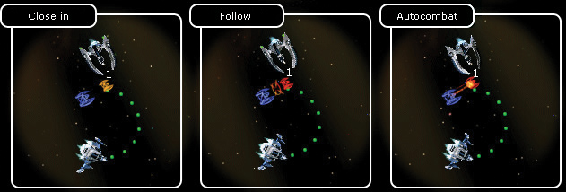

Ranger manual > Space
screen > Chase
|
Ranger manual > Space
screen > Chase
|
| Chase There are 3 chase modes. To activate any of them, proceed as follows: 1. Click a ship you wish to follow one or several times (make a small interval between the clicks, otherwise the system percieves it as a double click and the ship will automatically launch this chase mode). Toggle the modes by clicking the mouse. The first click activates the mode 'Close in', the second - 'Chase', the third - 'Autocombat'. 2. Press the 'End of turn' button. Your shipp will follow another ship in the selected mode. Each mode has its own cursor. |

Description of the modes: • Close in - follow the selected ship as a convoy. • Chase - keep at the distance of a shot from the alien ship. • Autocombat - catch the enemy and fight him to the bitter end. Note. Advantages and disadvatages of the autocombat: Advantages: • no need to issue orders at each turn; • player's ship flies itself and fights. Disadvantages: • The player can't control his ship till the enemy dies, or till the player's ship is severely damaged, or till the player has the 'End of turn' button pressed. |